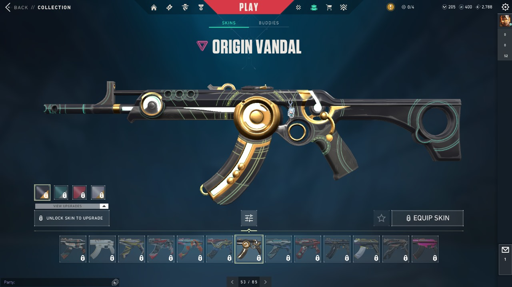

The Vandal is one of Valorant's most iconic weapons, known for its one-tap potential and popularity among both casual and professional players. But with dozens of skins available, which ones do the pros prefer? We surveyed 50 professional Valorant players across major organizations like Sentinels, 100 Thieves, Fnatic, and more to rank the best Vandal skins based on visual appeal, sound effects, and overall feel.
Methodology
Our survey asked professional players to rate Vandal skins on a scale of 1-10 across three categories:
- Visual Design: The aesthetic appeal of the skin, including animations and effects
- Sound Design: The firing, reload, and equip sounds
- Game Feel: The subjective feeling of using the skin in competitive play
We then calculated a weighted average to determine the final rankings, with Game Feel given slightly more weight as pros emphasized its importance in competitive settings.
The Rankings
1. Reaver Vandal
Coming in at the top spot with an overwhelming majority of first-place votes is the Reaver Vandal. Pros consistently praised its clean visual design, distinctive but not distracting animations, and what many described as the "crispest" sound in the game.
Pro Player Quote: "The Reaver just hits different. The sound makes you feel like every bullet is connecting, and the finisher is intimidating without being too flashy." - TenZ, Sentinels
Average Score: 9.7/10
2. Prime Vandal
A close second is the Prime Vandal, which many pros consider the gold standard for weapon skins in Valorant. Its clean design and satisfying sound effects make it a perennial favorite.

Pro Player Quote: "Prime was the first skin I ever bought, and I still go back to it. The sound is so satisfying, and the design is clean without being distracting." - Shroud, Sentinels
Average Score: 9.5/10
3. RGX 11z Pro Vandal
The RGX 11z Pro has gained significant popularity among pros for its unique kill counter feature and sleek, gaming-peripheral inspired design.
Pro Player Quote: "The kill counter adds a fun competitive element, and the sound is really clean. Plus, the RGB effects are subtle enough not to be distracting." - ScreaM, Team Liquid
Average Score: 9.2/10
4. Oni Vandal
The Oni Vandal's distinctive Japanese-inspired design and unique firing sound earned it high marks from many pros who appreciate its distinctive character.
Pro Player Quote: "The Oni has this unique sound that makes tracking your spray pattern easier. The design is also really unique without being too busy." - nAts, Navi
Average Score: 8.9/10
5. Champions 2023 Vandal
The Champions 2023 Vandal's aura effect that activates when you're top fragging makes it a favorite among confident pros, though some noted that the pressure of the effect can be a double-edged sword.
Pro Player Quote: "When that aura kicks in, it gives you a psychological boost. It's like a reminder that you're in the zone." - yay, Cloud9
Average Score: 8.7/10
6. Elderflame Vandal
The dragon-themed Elderflame is one of the most visually distinctive skins in the game. While some pros find it too distracting for competitive play, others appreciate its unique animations and sound design.
Pro Player Quote: "It's definitely flashy, but there's something satisfying about the dragon breathing fire with every shot. I use it when I want to switch things up." - Derke, Fnatic
Average Score: 8.4/10
7. Origin Vandal
The Origin Vandal's clean, sci-fi design and unique equip animation earned it praise for being visually distinctive without being distracting during gameplay.
Pro Player Quote: "The Origin has this really clean profile that doesn't take up much screen space. The equip animation is cool but quick, which is perfect for competitive play." - Asuna, 100 Thieves
Average Score: 8.2/10
8. Neptune Vandal
The Neptune Vandal's aquatic theme and unique bubble effects make it stand out from other skins, though some pros mentioned that the sound can be slightly muffled compared to top-tier options.
Pro Player Quote: "The Neptune has this really unique vibe that no other skin has. The water effects are subtle enough not to be distracting." - Boaster, Fnatic
Average Score: 8.0/10
9. Prelude to Chaos Vandal
The Prelude to Chaos Vandal's dark, cosmic design and distinctive sound effects earned it points for uniqueness, though some pros found its visual effects slightly distracting in certain maps.
Pro Player Quote: "The sound is really unique, and the design stands out. It can be a bit much on bright maps, but on darker maps like Split, it feels perfect." - cNed, Navi
Average Score: 7.8/10
10. Glitchpop Vandal
Rounding out the top 10 is the Glitchpop Vandal, whose cyberpunk aesthetic and colorful design make it a favorite for players looking to make a statement, though some pros find it visually busy for competitive play.
Pro Player Quote: "Glitchpop is just fun to use. It's not my go-to for tournaments, but for streaming and ranked, it adds some personality to your gameplay." - Hiko, 100 Thieves (retired)
Average Score: 7.6/10
Honorable Mentions
These skins just missed the top 10 but received significant votes from pros:
- Sentinels of Light Vandal - Praised for its clean design and satisfying sound
- Forsaken Vandal - Noted for its unique color-changing feature based on kills
- Ion Vandal - Appreciated for its minimalist design and crisp sound
- Gaia's Vengeance Vandal - Recognized for its nature-themed design and unique reload animation
What Makes a Pro-Approved Skin?
After analyzing the survey results and follow-up interviews, we identified several key factors that make certain skins preferred by professional players:
1. Clean Visual Design
Pros overwhelmingly prefer skins that don't obstruct visibility or create visual clutter. Skins with slim profiles and minimal distracting effects ranked higher.
2. Distinctive Sound
Sound design was mentioned by nearly every pro as a crucial factor. The ideal sound provides clear feedback for spray control while being satisfying to hear repeatedly.
3. Psychological Impact
Many pros mentioned switching skins based on their performance, with certain skins providing a "reset" effect when they're in a slump.
4. Animation Speed
Skins with quick equip and reload animations were preferred, as even milliseconds can matter in professional play.
Conclusion
While skin preference ultimately comes down to personal taste, it's clear that certain Vandal skins have earned widespread approval among professional players. The Reaver and Prime Vandals stand out as the gold standards, with their combination of clean visuals and satisfying sound design making them the weapons of choice for many of the world's best Valorant players.
It's worth noting that many pros mentioned rotating between their top 3-5 skins to keep the game feeling fresh, so don't feel like you need to stick with just one option if you have multiple skins in your collection.
What's your favorite Vandal skin? Do you agree with the pros' rankings? Let us know in the comments below!